In machine learning, measuring similarity and distnace of data is core in many machine learning tasks. In unspervised classification task, distance is used to assign classes. In recommendation engines, recommended list can be created from similarity of used contents (Content-Based Recommendations) or similarity of user profile (User-based Collaborative Filtering). In Natural Language Processing (NLP) task, key words in document is extracted based on similarity algorithm.
By understanding similarity and distance algorithms, we can improve machine learning performance. This is my wrap-up of Similarity and distance algorithms.
Geometry-based distances measure of how far part points are based on geometrical distance.
The Euclidean distance (or Euclidean metric) is a straight-line distance between two vectors.
The Euclidean distance between points p and q is the length of the line segment connecting them.
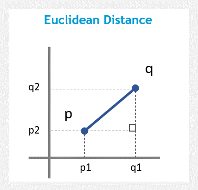Formula:

Python Script:
The Manhattan Distance (or taxicab metric) is the sum of the horizontal and vertical distances between points on a grid.
You can imagine this metric as a way to compute the distance between two points when you are not able to go through buildings.
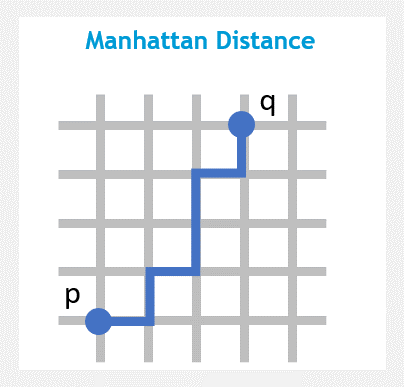Formula:
Python Script:
Minkowski distance (or Minkowski metric) is a metric in a normed vector space which can be considered as a generalization of both the Euclidean distance and the Manhattan distance.
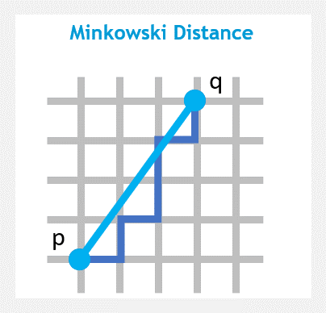Formula:
Python Script:
Chebyshev distance (or Tchebychev distance, maximum metric, chessboard distance) is a distance metric which is the maximum absolute distance in one dimension of two N dimensional points. It has real world applications in Chess, Warehouse logistics and many other fields.
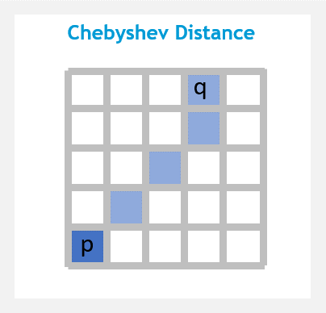Formula:
Python Script:
The Canberra distance is a weighted version of Manhattan distance. It measures the sum of absolute fractional differences between the features of a pair of data points and is very sensitive to a small change when both coordinates are nearest to zero.
The Canberra distance has been used as a metric for comparing ranked lists[3] and for intrusion detection in computer security.
Formula:
Python Script:
Similarity-based distances considers two objects to be similar based on variouse factors like correlation, cosine distance, etc.
Correlation is a technique for investigating the linear relationship between two continuous variables based on the Pearson correlation coefficient.
The Pearson’s correlation ranges from -1 to +1. A value of 1 implies perfect positive relationship. A value of -1 implies perfect negative relationship. A value of 0 implies no linear relationship.
correlation-based distance is suitable for when you want to identify clusters of observations with the same overall profiles.
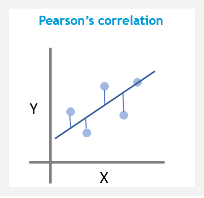Formula:
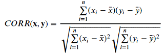Python Script:
Spearman's correlation is the nonparametric version of the Pearson product-moment correlation. It is calculated similarly to Pearson’s correlation but uses ranked data values. It determines the strength and direction of the monotonic relationship (whether linear or not).
Spearman's correlation ranges between -1 and +1, where -1 implies strong negative relationship and 1 implies strong positive relationship.
Spearman’s measure is more computationally efficient compared to Kendall’s Tau.
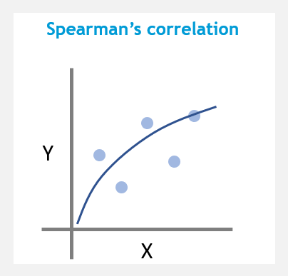Formula:

Python Script:
Kendall tau rank distance (or bubble-sort distance) is a metric that counts the number of pairwise disagreements between two ranking lists. The larger the distance, the more dissimilar the two lists are.
Kendall’s Tau ranges between -1 and +1 , where -1 suggests a strong, negative relationship between two variables and 1 suggests a strong, positive relationship between two variables.
Kendall’s Tau has smaller variability when using larger sample sizes.
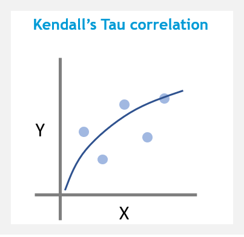Formula:
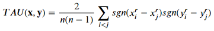Python Script:
The cosine distances calculates the cosine of the angle between two vectors.
Two vectors with the same orientation have a cosine similarity of 1, two vectors oriented at 90° relative to each other have a similarity of 0, and two vectors diametrically opposed have a similarity of -1.
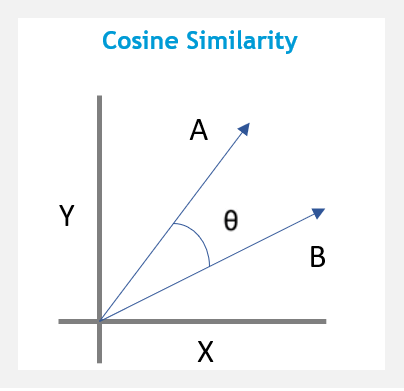Formula:

Python Script:
Cosine similarity is for comparing two real-valued vectors, but Jaccard similarity is for comparing two binary vectors (sets). Jaccard similarity divides the size of the intersection by the size of the union of the sample sets.
It’s a measure of similarity for the two sets of data, with a range from 0 to 1. The higher the value, the more similar the two sets.
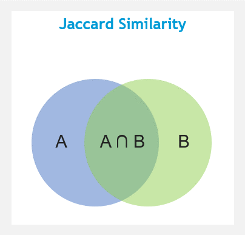Formula:
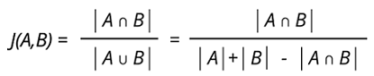Python Script:
🌐 SciPy Reference Guide: Scipy Statistical functions
🌐 SciPy Reference Guide: Scipy Distance functions